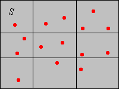
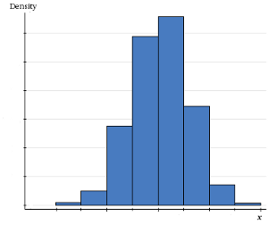

Ingat kembali model dasar statistika: kita memiliki populasi objek yang menjadi perhatian dan berbagai pengukuran (variabel) yang dilakukan terhadap objek-objek tersebut. Kita memilih objek dari populasi dan mencatat variabel untuk objek-objek dalam sampel; catatan ini menjadi data kita. Pembahasan pertama kita menggunakan sudut pandang yang sepenuhnya deskriptif. Artinya, kita tidak mengasumsikan bahwa data dihasilkan oleh suatu distribusi probabilitas yang mendasarinya. Namun, ingat bahwa data itu sendiri mendefinisikan suatu distribusi probabilitas.
Misalkan \(\bs{x} = (x_1, x_2, \ldots, x_n)\) merupakan sampel berukuran \(n\) dari suatu variabel bernilai riil. Rata-rata sampel hanyalah rata-rata aritmetika nilai-nilai sampel: \[ m = \frac{1}{n} \sum_{i = 1}^n x_i \]
Jika kita ingin menekankan kebergantungan rata-rata pada data, kita menulis \(m(\bs{x})\), bukan hanya \(m\). Perhatikan bahwa \(m\) memiliki satuan fisik yang sama dengan variabel yang mendasarinya. Sebagai contoh, jika kita mempunyai sampel berat tonggeret dalam gram, maka \(m\) juga dinyatakan dalam gram. Rata-rata sampel sering digunakan sebagai ukuran pemusatan data. Bahkan, jika setiap \(x_i\) merupakan lokasi suatu massa titik, maka \(m\) adalah pusat massa sebagaimana didefinisikan dalam fisika. Salah satu penyajian grafis sederhana untuk data ialah diagram titik: pada garis bilangan, sebuah titik ditempatkan di \(x_i\) untuk setiap \(i\). Jika ada nilai yang berulang, titik-titik ditumpuk secara vertikal. Rata-rata sampel \(m\) merupakan titik keseimbangan diagram titik. Gambar di bawah menunjukkan diagram titik dengan rata-rata sebagai titik keseimbangannya.
Notasi baku untuk rata-rata sampel yang bersesuaian dengan data \(\bs{x}\) adalah \(\bar{x}\). Dalam teks ini, kita menyimpang dari tradisi dan tidak menggunakan notasi garis atas karena notasi itu kurang praktis serta tidak konsisten dengan notasi statistik lain, seperti varians sampel, simpangan baku sampel, dan kovarians sampel. Namun, Anda perlu mengetahui notasi baku tersebut karena hampir pasti akan menjumpainya dalam sumber lain.
Latihan-latihan berikut menetapkan beberapa sifat sederhana rata-rata sampel. Misalkan \(\bs{x} = (x_1, x_2, \ldots, x_n)\) dan \(\bs{y} = (y_1, y_2, \ldots, y_n)\) merupakan sampel berukuran \(n\) dari variabel populasi bernilai riil, dan misalkan \(c\) suatu konstanta. Dalam notasi vektor, ingat bahwa \(\bs{x} + \bs{y} = (x_1 + y_1, x_2 + y_2, \ldots, x_n + y_n)\) dan \(c \bs{x} = (c x_1, c x_2, \ldots, c x_n)\).
Menghitung rata-rata sampel merupakan operasi linear.
Rata-rata sampel mempertahankan urutan.
Bagian (a) dan (b) langsung terlihat dari definisi . Bagian (c) mengikuti dari bagian (a) dan linearitas rata-rata sampel. Secara khusus, jika \(\bs{x} \le \bs{y}\) (dalam urutan hasil kali), maka \(\bs{y} - \bs{x} \ge 0\). Karena itu, menurut (a), \(m(\bs{y} - \bs{x}) \ge 0\). Namun, \(m(\bs{y} - \bs{x}) = m(\bs{y}) - m(\bs{x})\). Jadi, \(m(\bs{y}) \ge m(\bs{x})\). Dengan cara serupa, (d) mengikuti dari (b) dan linearitas rata-rata sampel.
Secara langsung, rata-rata suatu sampel konstan hanyalah konstanta tersebut.
Jika \(\bs{c} = (c, c, \ldots, c)\) merupakan sampel konstan, maka \(m(\bs{c}) = c\).
Perhatikan bahwa
\[m(\bs{c}) = \frac{1}{n} \sum_{i = 1}^n c_i = \frac{n c}{n} = c\]Sebagai kasus khusus dari hasil-hasil ini, misalkan \(\bs{x} = (x_1, x_2, \ldots, x_n)\) merupakan sampel berukuran \(n\) yang bersesuaian dengan variabel riil \(x\), dan misalkan \(a\) dan \(b\) merupakan konstanta. Dalam notasi vektor kita, sampel yang bersesuaian dengan variabel \(y = a + b x\) ialah \(\bs{a} + b \bs{x}\). Rata-rata sampelnya berhubungan dengan cara yang persis sama, yaitu \(m(\bs{a} + b \bs{x}) = a + b m(\bs{x})\). Transformasi linear jenis ini, ketika \(b \gt 0\), sering muncul saat satuan fisik diubah. Dalam hal ini, transformasi tersebut sering disebut transformasi lokasi-skala; \(a\) adalah parameter lokasi dan \(b\) adalah parameter skala. Sebagai contoh, jika \(x\) merupakan panjang suatu objek dalam inci, maka \(y = 2.54 x\) merupakan panjang objek tersebut dalam sentimeter. Jika \(x\) merupakan suhu suatu objek dalam derajat Fahrenheit, maka \(y = \frac{5}{9}(x - 32)\) merupakan suhu objek tersebut dalam derajat Celsius.
Rata-rata sampel terdapat di mana-mana dalam statistika. Dalam beberapa paragraf berikut, kita akan membahas sejumlah statistik khusus yang didasarkan pada rata-rata sampel.
Misalkan sekarang \(\bs{x} = (x_1, x_2, \ldots, x_n)\) merupakan sampel berukuran \(n\) dari suatu variabel umum yang mengambil nilai dalam himpunan \( S \). Untuk \(A \subseteq S\), frekuensi \(A\) yang bersesuaian dengan \(\bs{x}\) adalah banyaknya nilai data yang berada dalam \(A\): \[ n(A) = \#\{i \in \{1, 2, \ldots, n\}: x_i \in A\} = \sum_{i=1}^n \bs{1}(x_i \in A)\] Frekuensi relatif \(A\) yang bersesuaian dengan \(\bs{x}\) adalah proporsi nilai data yang berada dalam \(A\): \[ p(A) = \frac{n(A)}{n} = \frac{1}{n} \, \sum_{i=1}^n \bs{1}(x_i \in A)\] Perhatikan bahwa untuk \(A\) tetap, \(p(A)\) itu sendiri merupakan rata-rata sampel yang bersesuaian dengan data \(\{\bs{1}(x_i \in A): i \in \{1, 2, \ldots, n\}\}\). Fakta ini patut ditegaskan kembali: setiap proporsi sampel merupakan rata-rata sampel yang bersesuaian dengan suatu variabel indikator. Pada gambar di bawah, titik merah menyatakan data sehingga \(p(A) = 4/15\).

\(p\) merupakan ukuran probabilitas pada \(S\).
Bagian (a) dan (b) langsung terlihat. Untuk bagian (c), perhatikan bahwa karena himpunan-himpunan tersebut saling lepas, \begin{align} p\left(\bigcup_{j \in J} A_j\right) & = \frac{1}{n} \sum_{i=1}^n \bs{1}\left(x_i \in \bigcup_{j \in J} A_j\right) = \frac{1}{n} \sum_{i=1}^n \sum_{j \in J} \bs{1}(x_i \in A_j) \\ & = \sum_{j \in J} \frac{1}{n} \sum_{i=1}^n \bs{1}(x_i \in A_j) = \sum_{j \in J} p(A_j) \end{align}
Ukuran probabilitas ini dikenal sebagai distribusi probabilitas empiris yang terkait dengan himpunan data \(\bs{x}\). Distribusi ini merupakan distribusi diskret yang menempatkan probabilitas \(\frac{1}{n}\) pada setiap titik \(x_i\). Bahkan, pengamatan ini memberikan bukti yang lebih sederhana untuk teorema sebelumnya. Jadi, jika nilai-nilai data berbeda-beda, distribusi empiris tersebut merupakan distribusi seragam diskret pada \(\{x_1, x_2, \ldots, x_n\}\). Secara lebih umum, jika \(x \in S\) muncul \(k\) kali dalam data, distribusi empiris memberikan probabilitas \(k/n\) kepada \(x\).
Jika variabel yang mendasarinya bernilai riil, jelas bahwa rata-rata sampel hanyalah rata-rata distribusi empiris. Dengan demikian, rata-rata sampel memenuhi semua sifat nilai harapan, bukan hanya sifat linear dalam dan sifat menaik dalam yang diberikan di atas. Sifat-sifat tersebut merupakan sifat yang paling penting sehingga diulangi untuk penekanan.
Misalkan sekarang variabel populasi \(x\) mengambil nilai dalam himpunan \(S \subseteq \R^d\) untuk suatu \(d \in \N_+\). Ingat bahwa ukuran baku pada \(\R^d\) diberikan oleh \[ \lambda_d(A) = \int_A 1 \, dx, \quad A \subseteq \R^d \] Secara khusus, \(\lambda_1(A)\) adalah panjang \(A\), untuk \(A \subseteq \R\); \(\lambda_2(A)\) adalah luas \(A\), untuk \(A \subseteq \R^2\); dan \(\lambda_3(A)\) adalah volume \(A\), untuk \(A \subseteq \R^3\). Misalkan \(x\) merupakan variabel kontinu dalam arti bahwa \(\lambda_d(S) \gt 0\). Biasanya, \(S\) merupakan interval jika \(d = 1\) dan hasil kali Kartesius dari interval-interval jika \(d \gt 1\). Sekarang, untuk \(A \subseteq S\) dengan \(\lambda_d(A) \gt 0\), kepadatan empiris \(A\) yang bersesuaian dengan \(\bs{x}\) adalah \[ D(A) = \frac{p(A)}{\lambda_d(A)} = \frac{1}{n \, \lambda_d(A)} \sum_{i=1}^n \bs{1}(x_i \in A) \] Dengan demikian, kepadatan empiris \(A\) adalah proporsi nilai data dalam \(A\) dibagi ukuran \(A\). Pada gambar di bawah (yang bersesuaian dengan \(d = 2\)), jika luas \(A\), misalnya, adalah 5, maka \(D(A) = 4/75\).
Misalkan kembali \(\bs{x} = (x_1, x_2, \ldots, x_n)\) merupakan sampel berukuran \(n\) dari suatu variabel bernilai riil. Untuk \(x \in \R\), misalkan \(F(x)\) menyatakan frekuensi relatif dalam (probabilitas empiris) dari \((-\infty, x]\) yang bersesuaian dengan himpunan data \(\bs{x}\). Jadi, untuk setiap \(x \in \R\), \(F(x)\) merupakan rata-rata sampel dari data \(\{\bs{1}(x_i \le x): i \in \{1, 2, \ldots, n\}\}:\) \[ F(x) = p\left((-\infty, x]\right) = \frac{1}{n} \sum_{i = 1}^n \bs{1}(x_i \le x) \]
\(F\) merupakan fungsi distribusi.
Misalkan \((y_1,y_2, \ldots, y_k)\) merupakan nilai-nilai data yang berbeda, diurutkan dari yang terkecil hingga terbesar, dan misalkan \(y_j\) muncul \(n_j\) kali dalam data. Maka \(F(x) = 0\) untuk \(x \lt y_1\), \(F(x) = n_1 / n\) untuk \(y_1 \le x \lt y_2\), \(F(x) = (n_1 + n_2) / n\) untuk \(y_2 \le x \lt y_3\), dan seterusnya.
Sesuai dengan sifatnya, \(F\) disebut fungsi distribusi empiris yang terkait dengan \(\bs{x}\), dan hanyalah fungsi distribusi dari distribusi empiris dalam yang bersesuaian dengan \(\bs{x}\). Jika kita mengetahui ukuran sampel \(n\) dan fungsi distribusi empiris \(F\), kita dapat memulihkan data kecuali urutan pengamatannya. Nilai-nilai data yang berbeda adalah titik-titik tempat \(F\) melompat, dan banyaknya nilai data pada titik semacam itu adalah besar lompatan dikalikan ukuran sampel \(n\).
Misalkan sekarang \(\bs{x} = (x_1, x_2, \ldots, x_n)\) merupakan sampel berukuran \(n\) dari suatu variabel diskret yang mengambil nilai dalam himpunan terhitung \(S\). Untuk \(x \in S\), misalkan \(f(x)\) merupakan frekuensi relatif dalam (probabilitas empiris) dari \(x\) yang bersesuaian dengan himpunan data \(\bs{x}\). Jadi, untuk setiap \(x \in S\), \(f(x)\) merupakan rata-rata sampel dari data \(\{\bs{1}(x_i = x): i \in \{1, 2, \ldots, n\}\}\): \[ f(x) = p(\{x\}) = \frac{1}{n} \sum_{i=1}^n \bs{1}(x_i = x) \] Pada gambar di bawah, titik-titik tersebut adalah nilai-nilai yang mungkin dari variabel yang mendasarinya. Titik merah menyatakan data, dan angka-angka menunjukkan nilai yang berulang. Titik biru adalah nilai variabel yang mungkin tetapi kebetulan tidak muncul dalam data. Jadi, ukuran sampelnya adalah 12, dan untuk nilai \(x\) yang muncul 3 kali, kita mempunyai \(f(x) = 3/12\).

\(f\) merupakan fungsi kepadatan probabilitas diskret:
Bagian (a) langsung terlihat. Untuk bagian (b), perhatikan bahwa \[ \sum_{x \in S} f(x) = \sum_{x \in S} p(\{x\}) = 1 \]
Sesuai dengan sifatnya, \(f\) disebut fungsi kepadatan probabilitas empiris atau fungsi frekuensi relatif yang terkait dengan \(\bs{x}\), dan hanyalah fungsi kepadatan probabilitas dari distribusi empiris dalam yang bersesuaian dengan \(\bs{x}\). Jika kita mengetahui fungsi kepadatan probabilitas empiris \(f\) dan ukuran sampel \(n\), kita dapat memulihkan himpunan data tersebut kecuali urutan pengamatannya.
Jika variabel populasi yang mendasarinya bernilai riil, rata-rata sampel merupakan nilai harapan yang dihitung terhadap fungsi kepadatan empiris. Artinya, \[ \frac{1}{n} \sum_{i=1}^n x_i = \sum_{x \in S} x \, f(x) \]
Perhatikan bahwa \[ \sum_{x \in S} x f(x) = \sum_{x \in S} x \frac{1}{n} \sum_{i=1}^n \bs{1}(x_i = x) = \frac{1}{n}\sum_{i=1}^n \sum_{x \in S} x \bs{1}(x_i = x) = \frac{1}{n} \sum_{i=1}^n x_i \]
Seperti telah kita catat, jika variabel populasi bernilai riil, rata-rata sampel merupakan rata-rata distribusi empiris.
Misalkan sekarang \(\bs{x} = (x_1, x_2, \ldots, x_n)\) merupakan sampel berukuran \(n\) dari suatu variabel kontinu yang mengambil nilai dalam himpunan \(S \subseteq \R^d\). Misalkan \(\mathscr{A} = \{A_j: j \in J\}\) merupakan partisi \(S\) berupa koleksi terhitung dari himpunan-himpunan bagian yang masing-masing memiliki ukuran positif dan berhingga. Ingat bahwa istilah partisi berarti himpunan-himpunan bagian tersebut saling lepas berpasangan dan gabungannya adalah \(S\). Misalkan \(f\) merupakan fungsi pada \(S\) yang didefinisikan dengan aturan bahwa \(f(x)\) adalah kepadatan empiris dalam dari \(A_j\), yang bersesuaian dengan himpunan data \(\bs{x}\), untuk setiap \(x \in A_j\). Dengan demikian, \(f\) konstan pada setiap himpunan partisi: \[ f(x) = D(A_j) = \frac{p(A_j)}{\lambda_d(A_j)} = \frac{1}{n \lambda_d(A_j)} \sum_{i=1}^n \bs{1}(x_i \in A_j), \quad x \in A_j \]
\(f\) merupakan fungsi kepadatan probabilitas kontinu.
Bagian (a) langsung terlihat. Untuk bagian (b), perhatikan bahwa karena \(f\) konstan pada \(A_j\) untuk setiap \(j \in J\), kita mempunyai \[\int_S f(x) \, dx = \sum_{j \in J} \int_{A_j} f(x) \, dx = \sum_{j \in J} \lambda_d(A_j) \frac{p(A_j)}{\lambda_d(A_j)} = \sum_{j \in J} p(A_j) = 1 \]
Fungsi \(f\) disebut fungsi kepadatan probabilitas empiris yang terkait dengan data \(\bs{x}\) dan partisi \(\mathscr{A}\). Untuk distribusi probabilitas yang didefinisikan oleh \(f\), probabilitas empiris \(p(A_j)\) didistribusikan secara seragam pada \(A_j\) untuk setiap \(j \in J\). Pada gambar di bawah, titik merah menyatakan data dan garis hitam mendefinisikan partisi \(S\) menjadi 9 persegi panjang. Untuk himpunan partisi \(A\) di kanan atas, distribusi empiris akan mendistribusikan probabilitas \(3/15 = 1/5\) secara seragam pada \(A\). Jika luas \(A\), misalnya, adalah 4, maka \(f(x) = 1/20 \) untuk \(x \in A\).

Berbeda dengan kasus diskret, kita tidak dapat memulihkan data dari fungsi kepadatan probabilitas empiris. Jika kita mengetahui ukuran sampel, tentu kita dapat menentukan banyaknya titik data dalam \(A_j\) untuk setiap \(j\), tetapi tidak dapat menentukan lokasi persis titik-titik tersebut dalam \(A_j\). Karena alasan ini, rata-rata fungsi kepadatan probabilitas empiris pada umumnya tidak sama dengan rata-rata sampel ketika variabel yang mendasarinya bernilai riil.
Pembahasan berikut berkaitan erat dengan pembahasan sebelumnya. Misalkan kembali \(\bs{x} = (x_1, x_2, \ldots, x_n)\) merupakan sampel berukuran \(n\) dari suatu variabel yang mengambil nilai dalam himpunan \(S\), dan misalkan \(\mathscr{A} = (A_1, A_2, \ldots, A_k)\) merupakan partisi \(S\) menjadi \(k\) himpunan bagian. Himpunan-himpunan dalam partisi tersebut kadang-kadang disebut kelas. Variabel yang mendasarinya dapat bersifat diskret atau kontinu.
Dalam dimensi 1 atau 2, diagram batang dari salah satu distribusi tersebut disebut histogram. Histogram distribusi frekuensi dan histogram distribusi frekuensi relatif yang bersesuaian tampak sama, kecuali perubahan skala pada sumbu vertikal. Jika semua kelas berukuran sama, histogram dari distribusi kepadatan yang bersesuaian juga tampak sama, sekali lagi kecuali perubahan skala pada sumbu vertikal. Jika variabel yang mendasarinya bernilai riil, kelas-kelas biasanya berupa interval (diskret atau kontinu), dan titik tengah interval-interval ini kadang-kadang disebut titik tengah kelas.

Seluruh tujuan pembentukan partisi dan pembuatan grafik salah satu distribusi empiris yang bersesuaian dengan partisi tersebut adalah untuk merangkum dan menyajikan data secara bermakna. Karena itu, terdapat beberapa pedoman umum dalam memilih kelas:
Untuk distribusi yang sangat menceng, kelas-kelas dengan ukuran berbeda merupakan pilihan yang tepat agar tidak terbentuk banyak kelas dengan frekuensi sangat kecil. Untuk variabel kontinu dengan ukuran kelas yang berbeda-beda, histogram kepadatan harus digunakan sebagai pengganti histogram frekuensi atau frekuensi relatif; jika tidak, grafik tersebut menyesatkan secara visual dan bahkan salah secara matematis.
Penting untuk disadari bahwa data frekuensi tidak terelakkan untuk variabel kontinu. Sebagai contoh, misalkan variabel kita menyatakan berat sekantong M&M (dalam gram) dan alat ukur kita (sebuah timbangan) memiliki ketelitian 0.01 gram. Jika berat satu kantong terukur 50.32, sebenarnya kita mengatakan bahwa berat tersebut berada dalam interval \([50.315, 50.325)\) (atau mungkin interval lain, bergantung pada cara kerja alat ukur). Demikian pula, ketika dua kantong memiliki berat terukur yang sama, kesamaan semu tersebut sesungguhnya hanyalah akibat ketidaktelitian alat ukur; berat kedua kantong itu hampir pasti tidak persis sama. Jadi, dua kantong dengan berat terukur yang sama sebenarnya memberikan hitungan frekuensi 2 untuk suatu interval tertentu.
Sekali lagi, terdapat kompromi antara banyaknya kelas dan ukuran kelas; kedua hal ini menentukan resolusi distribusi empiris yang bersesuaian dengan partisi. Pada satu ekstrem, ketika ukuran kelas lebih kecil daripada ketelitian data yang dicatat, setiap kelas memuat satu datum atau tidak memuat datum sama sekali. Dalam hal ini, tidak ada informasi yang hilang dan kita dapat memulihkan himpunan data asli dari distribusi frekuensi (kecuali urutan perolehan nilai data). Namun, bentuk data dapat sulit dikenali apabila terdapat banyak kelas dengan frekuensi kecil. Pada ekstrem lainnya, terdapat distribusi frekuensi dengan satu kelas yang memuat semua nilai yang mungkin dalam himpunan data. Dalam hal ini, semua informasi hilang kecuali banyaknya nilai dalam himpunan data. Di antara kedua kasus ekstrem ini, suatu distribusi empiris memberi kita informasi parsial, tetapi bukan informasi lengkap. Kasus-kasus antara tersebut dapat menata data secara berguna.
Misalkan sekarang variabel yang mendasarinya bernilai riil dan himpunan nilai yang mungkin dipartisi menjadi interval-interval \((A_1, A_2, \ldots, A_k)\), dengan titik ujung interval diurutkan dari yang terkecil hingga terbesar. Misalkan \(n_j\) menyatakan frekuensi kelas \(A_j\), sehingga \(p_j = n_j / n\) merupakan frekuensi relatif kelas \(A_j\). Misalkan \(t_j\) menyatakan titik tengah kelas \(A_j\). Frekuensi kumulatif kelas \(A_j\) adalah \(N_j = \sum_{i=1}^j n_i\), dan frekuensi relatif kumulatif kelas \(A_j\) adalah \(P_j = \sum_{i=1}^j p_i = N_j / n\). Perhatikan bahwa frekuensi kumulatif naik dari \(n_1\) ke \(n\), sedangkan frekuensi relatif kumulatif naik dari \(p_1\) ke 1.
Perhatikan bahwa ogive frekuensi relatif hanyalah grafik fungsi distribusi yang bersesuaian dengan distribusi probabilitas yang menempatkan probabilitas \(p_j\) pada \(t_j\) untuk setiap \(j\).
Dalam keadaan pada subbagian terakhir, misalkan kita tidak memiliki data sebenarnya \(\bs{x}\), tetapi hanya distribusi frekuensi. Nilai hampiran rata-rata sampel adalah \[ \frac{1}{n} \sum_{j = 1}^k n_j t_j = \sum_{j = 1}^k p_j t_j \] Aproksimasi ini didasarkan pada harapan bahwa rata-rata nilai data dalam setiap kelas dekat dengan titik tengah kelas tersebut. Sebenarnya, ruas kanan adalah nilai harapan distribusi yang menempatkan probabilitas \(p_j\) pada titik tengah kelas \(t_j\) untuk setiap \(j\).
Misalkan \(x\) merupakan suhu (dalam derajat Fahrenheit) suatu jenis komponen elektronik tertentu setelah 10 jam beroperasi.
Misalkan \(x\) merupakan panjang (dalam inci) suatu komponen hasil pemesinan dalam proses manufaktur.
Misalkan \(x\) merupakan banyaknya saudara laki-laki dan \(y\) banyaknya saudara perempuan bagi seseorang dalam populasi tertentu. Jadi, \(z = x + y\) merupakan banyaknya saudara kandung.
Profesor Moriarity mengajar 25 mahasiswa dalam salah satu kelas Stat 101 di Enormous State University (ESU). Nilai rata-rata ujian tengah semester pertama adalah 64 (dari maksimum 100 poin). Profesor Moriarity menilai nilai-nilai tersebut agak rendah dan mempertimbangkan berbagai transformasi untuk meningkatkannya. Dalam setiap kasus di bawah, tentukan rata-rata nilai yang telah ditransformasi atau nyatakan bahwa informasi yang tersedia tidak cukup.
Salah satu mahasiswa sama sekali tidak belajar dan memperoleh nilai 10 pada ujian tengah semester. Profesor Moriarity menganggap nilai ini sebagai pencilan.
Semua paket perangkat lunak statistika dapat menghitung rata-rata dan proporsi, menggambar diagram titik dan histogram, serta secara umum menjalankan prosedur numerik dan grafis yang dibahas dalam bagian ini. Untuk eksperimen statistik nyata, khususnya yang menggunakan himpunan data besar, penggunaan perangkat lunak statistika sangat penting. Di sisi lain, mengerjakan perhitungan secara manual dengan himpunan data kecil dan buatan juga bermanfaat untuk menguasai konsep dan definisi. Dalam subbagian ini, lakukan perhitungan dan gambar grafik dengan bantuan teknologi seminimal mungkin.
Misalkan \(x\) merupakan banyaknya mata kuliah matematika yang telah diselesaikan oleh seorang mahasiswa ESU. Sampel yang terdiri atas 10 mahasiswa ESU menghasilkan data \(\bs{x} = (3, 1, 2, 0, 2, 4, 3, 2, 1, 2)\).
Misalkan suatu sampel berukuran 12 dari variabel diskret \(x\) memiliki fungsi kepadatan empiris yang diberikan oleh \(f(-2) = 1/12\), \(f(-1) = 1/4\), \(f(0) = 1/3\), \(f(1) = 1/6\), \(f(2) = 1/6\).
Tabel berikut memberikan distribusi frekuensi jarak perjalanan ke gedung matematika/statistika (dalam mil) untuk suatu sampel mahasiswa ESU.
| Kelas | Frekuensi | Frekuensi Relatif | Kepadatan | Frekuensi Kumulatif | Frekuensi Relatif Kumulatif | Titik Tengah |
|---|---|---|---|---|---|---|
| \((0,2]\) | 6 | |||||
| \((2,6]\) | 16 | |||||
| \((6,10]\) | 18 | |||||
| \((10,20]\) | 10 | |||||
| Total |
| Kelas | Frekuensi | Frekuensi Relatif | Kepadatan | Frekuensi Kumulatif | Frekuensi Relatif Kumulatif | Titik Tengah |
|---|---|---|---|---|---|---|
| \((0,2]\) | 6 | 0.12 | 0.06 | 6 | 0.12 | 1 |
| \((2,6]\) | 16 | 0.32 | 0.08 | 22 | 0.44 | 4 |
| \((6, 10]\) | 18 | 0.36 | 0.09 | 40 | 0.80 | 8 |
| \((10, 20]\) | 10 | 0.20 | 0.02 | 50 | 1 | 15 |
| Total | 50 | 1 |
Pada histogram interaktif, klik sumbu \(x\) pada berbagai titik untuk menghasilkan himpunan data dengan sedikitnya 20 nilai. Ubah-ubah banyaknya kelas dan beralihlah antara histogram frekuensi dan histogram frekuensi relatif. Perhatikan perubahan bentuk histogram ketika Anda melakukan operasi-operasi tersebut. Perhatikan khususnya bagaimana histogram kehilangan resolusi ketika banyaknya kelas dikurangi.
Pada histogram interaktif, klik sumbu untuk menghasilkan distribusi dengan jenis yang diberikan dan sedikitnya 30 titik. Kemudian, ubah-ubah banyaknya kelas dan perhatikan perubahan bentuk distribusinya.
Perangkat lunak statistika sebaiknya digunakan untuk soal-soal dalam subbagian ini.
Perhatikan variabel panjang mahkota dan spesies dalam data iris Fisher.
Perhatikan variabel erosi dalam himpunan data Challenger.
Perhatikan data kelajuan cahaya Michelson.
Perhatikan data paralaks Matahari Short.
Perhatikan data densitas Bumi Cavendish.
Perhatikan data M&M.
Perhatikan variabel berat tubuh, spesies, dan jenis kelamin dalam data tonggeret.
Perhatikan data tinggi Pearson.